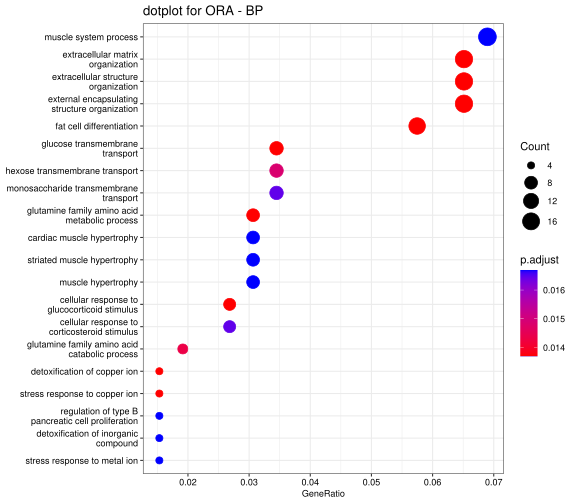
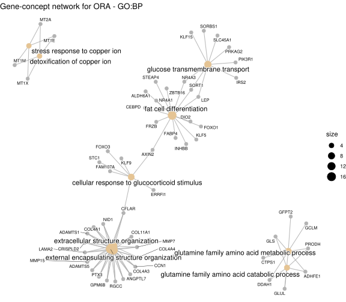
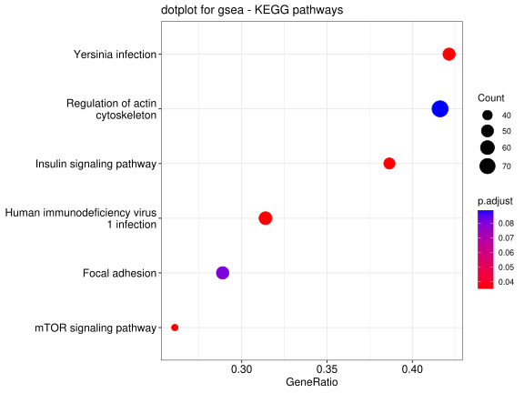
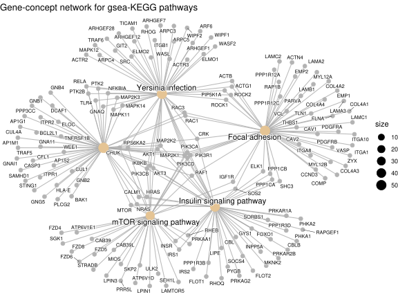

Part 5 Pathway and enrichment analysis
5.1 Downstream of DE gene analysis
5.1.1 Create a R project
If you have are not in RStudio yet:
1. Please go to the following URL:https://ondemand3.vai.zone/
2. Click on RStudio Server, and create a new RStudio session on OnDemand. Please make sure you are loading the right R version, “bbc2/R/alt/R-4.4.0-setR_LIBS_USER”, which you can select from the drop down menu. Partition can be “short”, “long”, “quick”, or “big”; Set CPU as 2, memory as 32, and time as 8 hours
3. In the Rstudio window, click “file” at the upper left corner, click on “New Project” > “New Directory” > “New Project”; Then click on “Browser”, you can click on triple dot horizontal button and manually type “/varidata/researchtemp/hpctmp/BBC_workshop_Oct2024_II” (make sure no typo), try to find your own folder then “rnaseq_workflow”, click on “choose”. Next you will go back to the project wizard, and type “enrichment”. Now, you should have created a R project under rnaseq_workflow folder named “enrichment”
4. Lastly, you can create a R script file to put all your code for analysis there by click File > New File > R script.
Click to expand Why create R project?
Creating an R Project in RStudio is recommended for several reasons:
1. A R Project creates a dedicated working directory for your project files, including R scripts, data files, figures, and output. This helps in organizing your files that are related to a specific project.
2. Automatic working directory Setup. When you open an R Project, RStudio automatically sets the working directory to the project folder.
3. Reproducibility. With a project-based setup, the code and files related to a project stay together, making it easier to reproduce results.
4. Version control integration and package development support.
5.1.4 How many DE genes
## note the part after the "." sign is the version number, here we can just remove it.
de_res$ens_gene <- str_split_fixed(de_res$ens_gene, "\\.", 2)[, 1]
## check the first a few rows again
head(de_res)## # A tibble: 6 × 10
## ens_gene Symbol Uniq_syms entrez Gene_name baseMean log2FoldChange lfcSE
## <chr> <chr> <chr> <dbl> <chr> <dbl> <dbl> <dbl>
## 1 ENSG00000152… SPARC… SPARCL1 8404 SPARC li… 994. 4.54 0.210
## 2 ENSG00000148… STOM STOM 2040 stomatin 13368. 1.41 0.0881
## 3 ENSG00000179… PER1 PER1 5187 period c… 764. 3.13 0.204
## 4 ENSG00000134… PHC2 PHC2 1912 polyhome… 2708. 1.37 0.0902
## 5 ENSG00000120… DUSP1 DUSP1 1843 dual spe… 3357. 2.90 0.198
## 6 ENSG00000125… MT2A MT2A 4502 metallot… 3627. 2.17 0.150
## # ℹ 2 more variables: pvalue <dbl>, padj <dbl>fdr_cutoff <- 0.1
up_reg_genes <- de_res |>
filter(padj < fdr_cutoff & log2FoldChange > 0 )
down_reg_genes <- de_res |>
filter(padj < fdr_cutoff & log2FoldChange < 0 )
message("Number of up-regulated genes is: ", nrow(up_reg_genes))## Number of up-regulated genes is: 1872## Number of down-regulated genes is: 14815.2 Why enrichment and pathway analysis?
It can be difficult to look at so many genes, and sometimes a list of genes do not provide any biological insights. Enrichment and pathway analyses are performed to determine if there is any known biological functions, interactions or pathways in your DE gene studies. Generally speaking, Enrichment and pathway analyses are not restricted for DE gene expression, they can be performed on proteomics data, ChIP-seq, and genomic data as well. There are different algorithms for enrichment and pathway analyses. In this session, we will focus on two types: ORA (over representation analysis) and GSEA (gene set enrichment analysis).
5.3 ORA
ORA explores whether there is enrichment of known biological functions or pathways in a particular set of genes (e.g. significantly up- or down-regulated genes). Gene ontology (GO) and KEGG (Kyoto Encyclopedia of Genes and Genomes) are two broadly used databases that are curated for exploring pathways and gene functions. GO is a framework used to represent and categorize gene functions across different species in a standardized manner. It provides a controlled vocabulary that describes genes in terms of their associated biological processes, cellular components, and molecular functions. The Gene Ontology Consortium maintains the GO vocabulary, as known as GO terms.
Click to expand More details on GO terms:
To describe the roles of genes and gene products, GO terms are organized into three independent components in a species-independent manner:
The GO terms are loosely hierarchical, ranging from general, ‘parent’, terms to more specific, ‘child’ terms.
- Biological process: refers to the biological role involving the gene or gene product, and could include “transcription”, “signal transduction”, and “apoptosis”.
- Molecular function: represents the biochemical activity of the gene product, such activities could include “ligand”, “protein binding”, and “enzyme activity”.
- Cellular component: refers to the location in the cell of the gene product, such as “lysosome” and “plasma membrane”.
In this session, we will be mostly using clusterProfiler to conduct enrichment analyses.
In the ORA here, we will be testing whether 2 fold up-regulated (logfold-change = 1, as log fold change is often log2 based) genes are enriched in which GO terms. We will be using enrichGO function from clusterProfiler, and use the whole dataset (~20,000 genes) as the background (universe in enrichGO function).
## only getting DE genes at least have 2 fold change, so log2FC > 1, both up and down-regulated.
genes_2f_up <- de_res |>
filter(padj < fdr_cutoff & log2FoldChange > 1)
message("Number of DE genes have at least 2 fold change is: ", nrow(genes_2f_up))## Number of DE genes have at least 2 fold change is: 317ego_BP <- enrichGO(gene = as.character(genes_2f_up$entrez),
universe = as.character(de_res$entrez),
OrgDb = org.Hs.eg.db,
ont = "BP",
pAdjustMethod = "BH",
qvalueCutoff = 0.05,
keyType = "ENTREZID",
readable = TRUE)5.3.1 plot ORA results
Dotplots can be used to depict the enrichment scores (e.g. p values) and gene count or ratio as circle size and colors. Cneplots, gene-concept network, allows us to know which genes are involved in these significant GO terms or pathways, as well as the linkages among GO terms or pathways.

cnetplot(ego_BP, showCategory = 10, node_label_size = 0.6, cex_label_category = 0.8,
cex_label_gene = 0.5, cex_category = 0.8, cex_genes = 0.5,
max.overlaps = Inf) + ggtitle("Gene-concept network for ORA - GO:BP")
5.3.2 save ORA results to a tsv file
You can easily load this into Excel
ego_BP_df <- ego_BP |>
as.data.frame()
## output the BP enrichment results into a tsv file
write_tsv(ego_BP_df, paste0(outdir, "/clusterProfiler_BP_res.tsv"))Click to expand Exercise on your own:
Try to rerun the analyses:
1. Using the same conditions, return the enriched GO processes for the Molecular Function ontology.
- How would the enrichGO() function change if our organism was mouse?
5.4 GSEA
ORA is based on these differentially expressed genes. This approach will find genes where the difference is large and will fail where the difference is small, but evidenced in coordinated way in a set of related genes. GSEA directly addresses this limitation. Unlike ORA where an arbitrary threshold is set as “significant DE genes”, all genes can be used in GSEA. We usually sort genes based on their fold changes or p-values, and compare this sorted gene list to a predefined gene set, such as genes in certain pathways. It will help to detect situations where all genes in a predefined set change in a small but coordinated manner. P-values are generated through permutation tests. This type of analysis can be particularly helpful if the differential expression analysis only outputs a small number of significant DE genes.
Here, what we create is a sorted list of all genes (~20,000 genes) in our dataset sorted by -log10(pvalue) and sign of fold change; this way, up-regulated and down-regulated genes will be at the top and bottom of the list. In GSEA, we will show how to run GSEA on KEGG pathways
## we will use all the genes. Get the fold change and pvalues.
gene_list <- sign(de_res$log2FoldChange) * -log10(de_res$pvalue)
## or we can just use fold change data.
## get the name of the genes.
names(gene_list) <- de_res$entrez ## the names of the gene list is the en ID.
## remove NA is there is any in the fold change or gene names
if(any(is.na(gene_list))){
gene_list = gene_list[-which(is.na(gene_list))]
}
if(any(is.na(names(gene_list)))) {
gene_list = gene_list[-which(is.na(names(gene_list)))]
}
## also remove duplicated gene names
gene_list <- gene_list[!duplicated(names(gene_list))]
## sort from largest to smallest.
gene_list <- sort(gene_list, decreasing = TRUE)
head(gene_list)## 8404 2040 5187 1912 1843 4502
## 106.41851 59.25457 54.02435 53.41694 49.03381 48.37430# set seeds
set.seed(1234)
## run GSEA using clusterProfiler
gseaKEGG <- gseKEGG(geneList = gene_list, # ordered named vector of fold changes (Entrez IDs are the associated names)
organism = "hsa",
nPerm = 1000, # default number permutations
minGSSize = 100, # minimum gene set size (# genes in set) - change to test more sets or recover sets with fewer # genes
pvalueCutoff = 0.1, # padj cutoff value
verbose = FALSE,
eps = 0)## Reading KEGG annotation online: "https://rest.kegg.jp/link/hsa/pathway"...## Reading KEGG annotation online: "https://rest.kegg.jp/list/pathway/hsa"...5.4.2 plot GSEA results
Similarity, we can make dotplot and gene-concept network plots here.
# first dotplot
dotplot(gseaKEGG_gene_symbol, showCategory = 15) + ggtitle("dotplot for gsea - KEGG pathways")
cnetplot(gseaKEGG_gene_symbol,
showCategory = 5,
node_label_size = 0.6,
cex_label_category = 0.8,
cex_label_gene = 0.5,
cex_category = 0.8, cex_genes = 0.5,
max.overlaps = Inf) + ggtitle("Gene-concept network for gsea-KEGG pathways")
# Specific plots we can make for GSEA results
gseaplot(gseaKEGG_gene_symbol, geneSetID = 'hsa04910')
5.4.3 plot KEGG map
# Lastly, we can map gene expression to a KEGG map
foldchanges <- de_res$log2FoldChange
names(foldchanges) <- de_res$entrez
pathview(gene.data = foldchanges,
pathway.id = 'hsa04910',
species = "hsa",
limit = list(gene = 2, # value gives the max/min limit for foldchanges
cpd = 1),
low=list(gene="steelblue"),
high=list(gene="gold"))
## you can download the map from Rstudio, and you will be seeing something like this. 5.5 Other R packages and tools.
We introduced a few commonly used R packages to conduct enrichment and pathway analyses. Other popular tools and R packages include:
- g:Profiler: a web based toolfor functional profiling of gene or protein lists.
- gprofiler2, an R interface (package) to the widely used web toolset g:Profiler.
- Revigo: if you have a long list Gene Ontology terms, Revigo can nd summarize them by removing redundant GO terms.
- aPear: generate an enrichment network from enrichment results, works seamlessly with clusterProfiler.
- cytospace: an open source software platform for visualizing complex networks. Cytospace offer many apps (formerly known as plugins) to extends its functionalities, and see here for a workflow of how to visualize omics data using Cytospace and its apps.